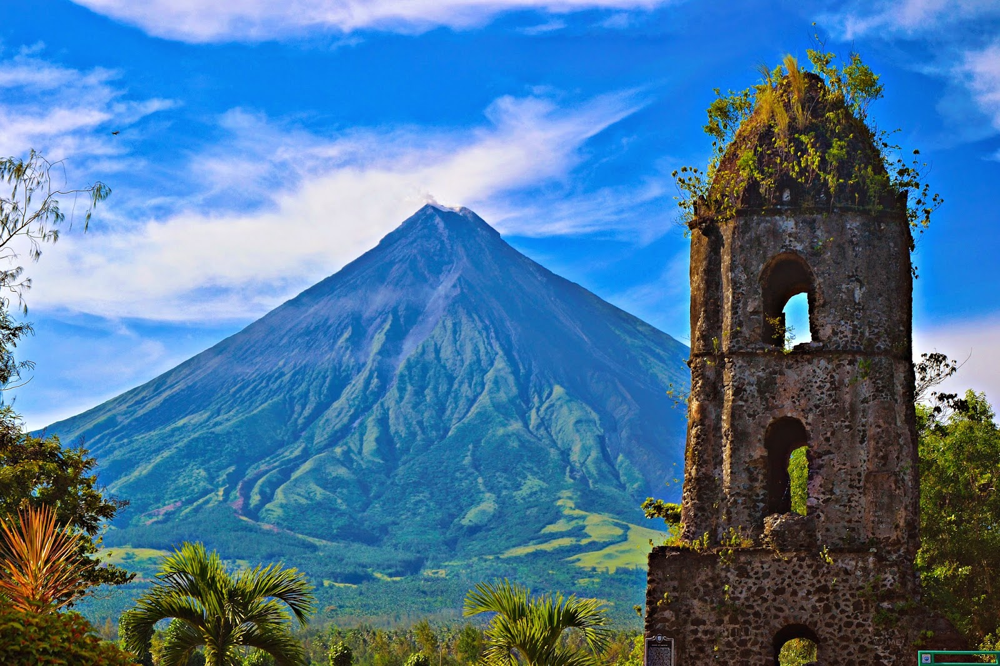

HOME Intramuros Mayon Volcano Kayangan lake Siargao
Mayon (Central Bikol: Bulkan Mayon; Tagalog: Bulkang Mayon, IPA: [mɐjɔn]), also known as Mount Mayon and Mayon Volcano (Spanish: Monte Mayón, Volcán Mayón),[4] is an active stratovolcano in the province of Albay in Bicol, Philippines. A popular tourist spot, it is renowned for its "perfect cone" because of its symmetric conical shape, and is regarded as sacred in Philippine mythology.[5] The volcano with its surrounding landscape was declared a national park on July 20, 1938, the first in the nation. It was reclassified as a natural park and renamed the Mayon Volcano Natural Park in 2000.[6] It is the centerpiece of the Albay Biosphere Reserve, declared by UNESCO in 2016,[7] and is currently being nominated as a World Heritage Site. Mayon is the most active volcano in the Philippines, and its activity is regularly monitored by the Philippine Institute of Volcanology and Seismology (PHIVOLCS) from their provincial headquarters on Ligñon Hill, about 12 kilometers (7.5 mi) from the summit.[8]
MMSU-CIT Copyright 2021 - Symon John Reyes